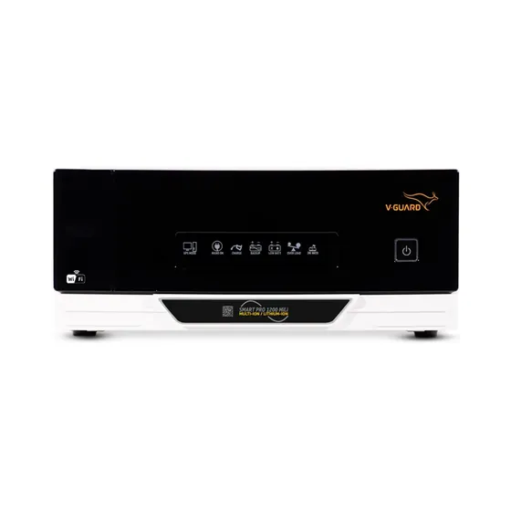
1200 VAV-Guard Smart Pro 1200 MiLiView details →
Home/UPS & inverters
Home UPS and inverter systems from V-Guard, with tubular or lithium batteries, sized to the load you actually want running during a cut.
Delivered and installed across Pandavapura, Mandya and Mysuru
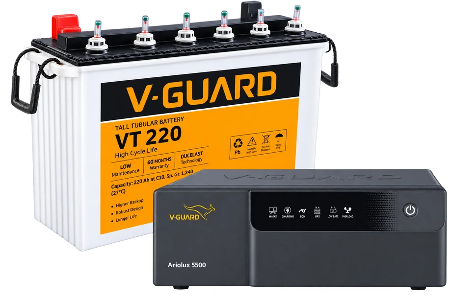
Brands we stock
Tap a brand to see just their models. Every one of these we can supply, install and service.

1200 VA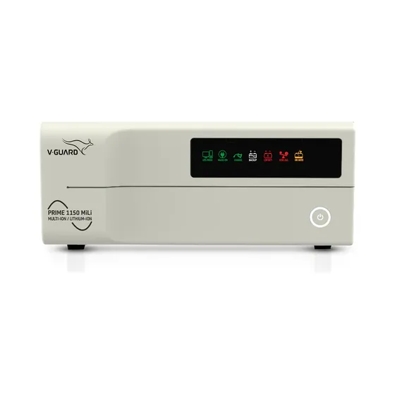
1150 VA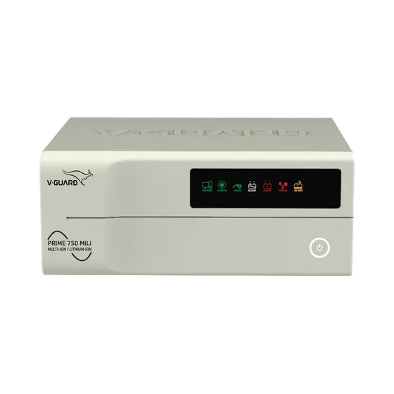
750 VA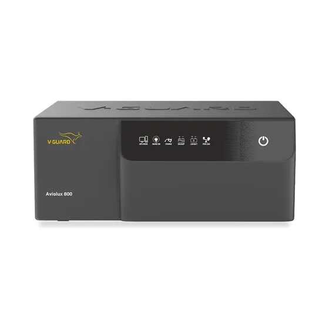
775 VA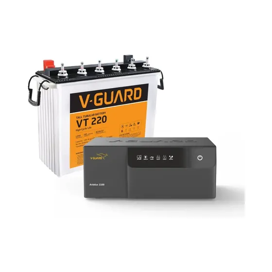
Aviolux 1100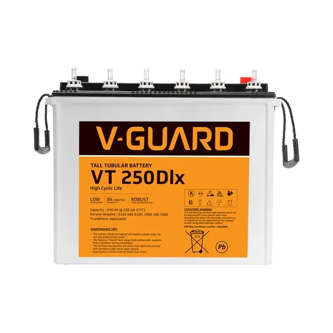
230 Ah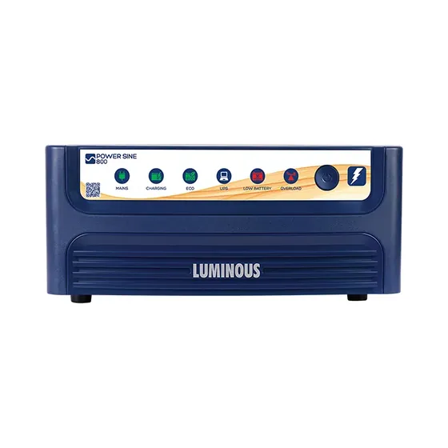
700 VA / 560 W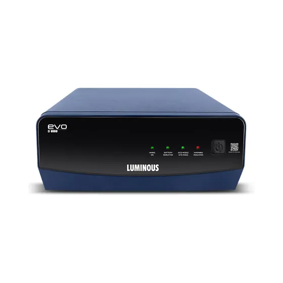
700 VA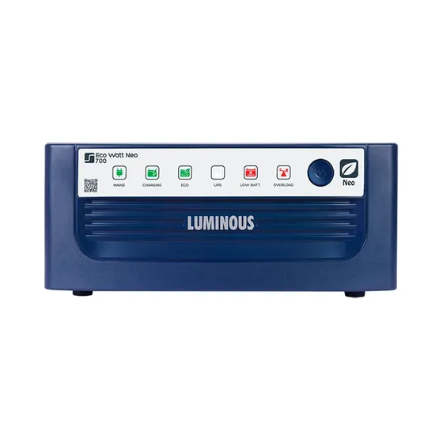
600 VA / 504 W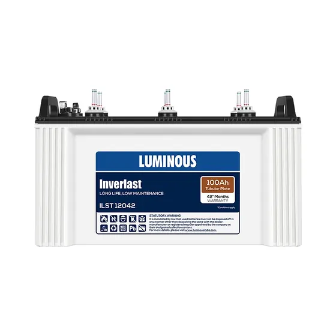
100 AhStock changes week to week — call us to check what is on the shelf today. Product photographs are added as the brands supply them.
"A UPS for a three-bedroom house" tells us nothing. What matters is which appliances must keep running, and for how long.
Fans, lights and a TV are a light, steady load. A fridge or a water pump is different — both surge hard at startup and need a sine-wave inverter.
Work it out yourself
The same rules we use in the shop, as two or three plain questions. It ends with a WhatsApp message already filled in with your numbers.
Tap to add. Tap again to remove.
More hours means a bigger battery, not a bigger inverter.
You need about
Get a price for this →Add up the wattage of everything that must keep running during a cut, then divide by 0.8 to get the VA rating. Four fans, eight lights and a television come to roughly 500 watts, which suits a 600 to 800 VA system. Adding a fridge or a water pump pushes the requirement up sharply.
Tubular batteries cost less and work well if you keep the water topped up and the space ventilated. Lithium costs more upfront, needs no maintenance, takes less space and lasts longer, so it often works out cheaper over the life of the system.
Yes, but only a correctly sized sine-wave system. Both draw a large surge at startup, several times their running wattage, and an undersized or square-wave inverter will struggle and shorten the life of both the inverter and the motor.
For most homes here, yes, as part of a pair. On-grid solar cuts your monthly bill but shuts down during a cut, while a separate UPS covers the cuts. That combination usually costs less than a full off-grid solar system with batteries.
That's all we need to quote properly.
During shop hours you'll usually have a price back within the hour. No charge for the site visit, and no obligation to buy.